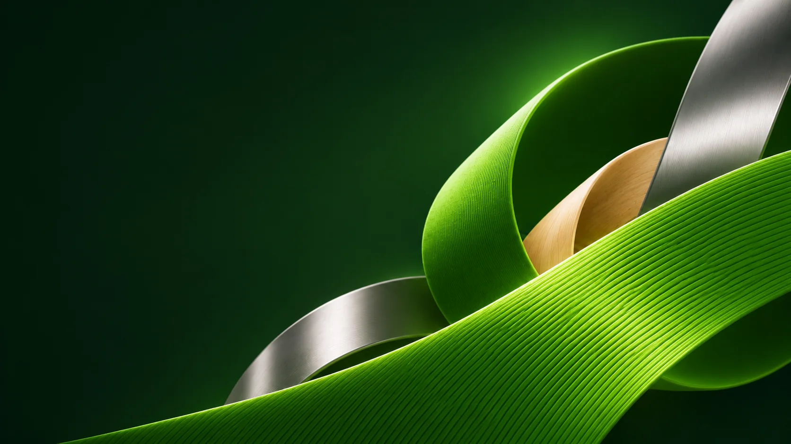
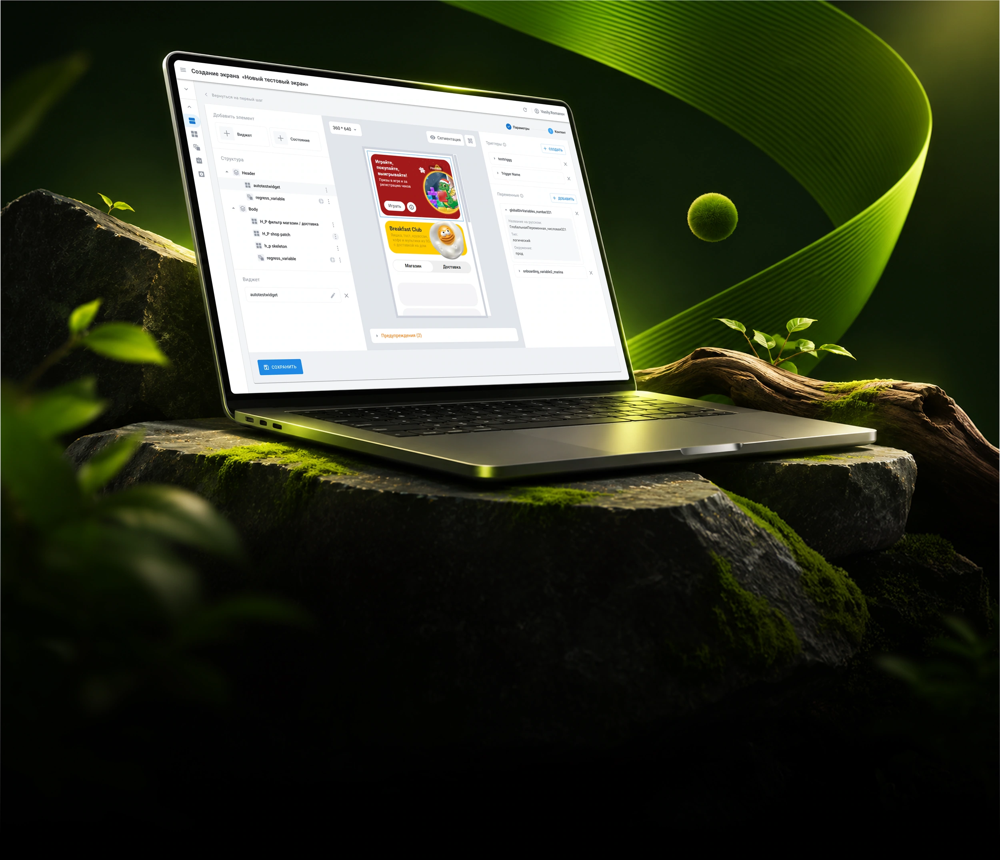
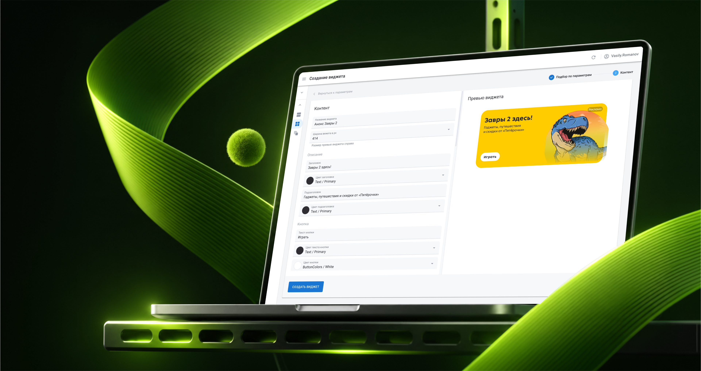

X5 Group
Сайт и мобильное приложение X5 требуют регулярного наполнения виджетами с контентом. Чтобы команды могли легко и безопасно управлять этим (с разными ролями), добавили удобную внутреннюю админ-панель.
О проекте
Моя роль
Продуктовый дизайнер
Сроки
3 месяцев на дизайн
Задача и ограничения
Создать удобный интерфейс и дизайн-систему на основе Material 2.0 для ролевой и виджетной админ-панелей
Состав команды
Продакт-менеджер
Деливери-менеджер
Аналитик
Разработка
Что я сделал
- Провел интервью с администраторами, чтобы выявить боли и ключевые сценарии работы:
- Проанализировал существующие админ-панель и выписал все проблемные места:
- Внимательно изучил все сделанные бизнес-аналитиками документации к проекту, задал вопросы и инициировал доработки для улучшения пользовательского опыта:
- Спроектировал 3 сценария:
- Создание роли
- Создание виджета
- Создание экрана приложения

Что в итоге?
Результатом работы стал дизайн MVP админ-панели с ролевой моделью, заложивший основу для дальнейшего развития системы управления контентом сайта и мобильного приложения

Сценарий №2
Управление экранами
Для размещения виджетов на сайте и в мобильном приложении переработал раздел «Экраны», с нуля спроектировав сценарии создания, редактирования и удаления экранов.
Финальная мысль
Не каждый проект доходит до релиза,
но каждый оставляет опыт. X5 стал для меня возможностью поработать со сложной системой, где за простым интерфейсом скрываются десятки сценариев и ограничений